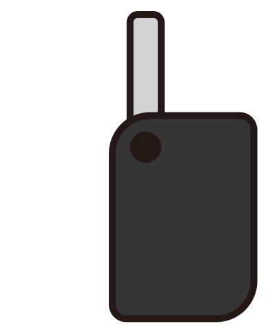

<!DOCTYPE html>
<html lang="en">
<head>
  <meta charset="UTF-8">
  <meta name="viewport" content="width=device-width, initial-scale=1.0">
  <title>Document</title>
  <style>
    .hand {
      position: absolute;
      left: 400px;
      top: 100px;
      width: 200px;
    }
    .key {
      position: absolute;
      left: 100px;
      top: 50px;
      width: 150px;
      transition: 1s;
    }
  </style>
</head>
<body>
  

  <!--
     (X)
    이미지태그도 되긴 하지만, 상세 내부 엘리먼트를 조작하려면 object가 용이함.

    image로 넣은 애는 자바스크립트 인식이 안되지만 object로 넣은 애는 인식이 됨.
  -->
  <object
    class="key"
    data="images/key.svg"
    type="image/svg+xml"
  ></object>


  <script>
    const hand = document.querySelector('.hand');
    const key = document.querySelector('.key');

    // 키가 손에 들어갔는지 여부
    let isKeyHand = false;

    // 손을 클릭하면 키가 손으로 들어가는 애니메이션
    hand.addEventListener('click', e => {
      if (isKeyHand) {
        // 원래 크기, 원래 위치로 돌아오기
        key.style.transform = 'scale(1) translate(0, 0)';
      } else {
        const handRect = hand.getBoundingClientRect();
        const leftPosition = handRect.left + 230;
        const topPostion = handRect.top - 50;


        console.log(leftPosition, topPostion);

        key.style.transform = `
          scale(0.5)
          translate(${leftPosition}px, ${topPostion}px)
        `;
      };
    });

    // 키를 클릭하면 손에서 키가 빠져나오는 애니메이션.
    // transitionend 이벤트를 사용했기때문에 마구 눌러도 애니메이션이 꼬이지 않음.
    key.addEventListener('transitionend', e => {
      isKeyHand = !isKeyHand;
    });
  </script>
</body>
</html>
